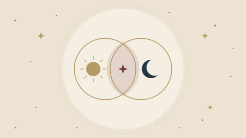

Chọn cung của hai người để xem mức hợp nhau về tình yêu, tình bạn và công việc. Điểm được tính theo góc giữa hai cung trên vòng hoàng đạo, nguyên tố và tính chất của mỗi cung.

Nội dung cung hoàng đạo do Lá Số Tử Vi biên soạn theo chiêm tinh phương Tây truyền thống, chỉ để tham khảo và giải trí, không thay cho lời khuyên chuyên môn. Vị trí các hành tinh được tính bằng Astronomy Engine (giấy phép MIT).